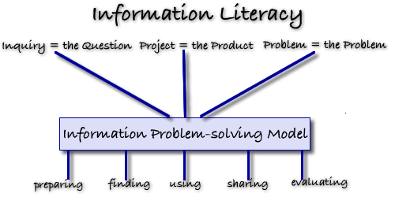

Selecting a Framework for Information Literacy
Inquiry-based Learning... Project-based Learning... Problem-based Learning

In Saskatchewan the concept of information literacy has been embedded in the Resource-based Learning approach and has become entrenched in the curriculum.
Resource-based learning is a constructivist-learning environment where students become active participants in their own learning; collaborate with others to meet their learning needs, and through the use of a wide variety of resources piece together information to construct their own meaningful understanding about a subject.
Saskatchewan learning in its policy documents and in each of its curricula states that resource-based learning:
- makes provisions for every student,
- encourages students to be active learners,
- allows students to vary the rate at which they learn,
- encourages students to be creative, imaginative and curious---to become active rather than passive learners,
- offers students and teachers the opportunity to choose the location in which to learn - the classroom, library or community,
- promotes acquisition of research skills, higher order thinking skills, communication skills.
Resource-based learning while offering a constructivist approach to education has been difficult to implement and over the past few years several manifestations have appeared which provide a practical framework for student research. These include inquiry-based learning, project-based learning and problem-based learning . Each of these approaches offers teachers a framework within which to structure student learning and once the framework is chosen an information problem-solving model can be selected.

Contact Information
Donna DesRoches
Learning Resources Consultant
Living Sky School Division
509 Pioneer Avenue
North Battleford, SK
S9A 4A5
306-937-7904
_________________________